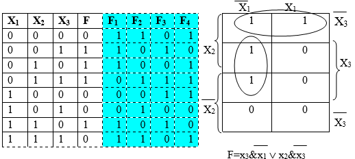

Практическая работа № 6
Тема: минимизация логической функции от трех аргументов методом Карно-Вейча.
Дидактическая цель: закрепить теоретические знания по основам математической логики и выработать практические навыки минимизации логической функции вторым способом
Литература:
1. О.Е. Акимов. Дискретная математика. – М. Лаборатория Базовых Знаний. 2010. 1.2., 1.4..
2. Ф.А. Новиков. Дискретная математика. – С-Пб.: Питер. 2008. 3.4.
3. Еловенко Н.А. Дискретная математика. Учебное пособие. – Волгоград. ГОУ СПО ВЭТК. 2008. Глава 3.
Порядок выполнения работы:
1. Проверка теоретической подготовки студентов (метод Карно-Вейча, тождественность функций, цель минимизации ЛФ).
2. Инструктаж преподавателя о ходе выполнения работы.
3. Выполнение работы с использованием методических указаний по вариантам.
4. Подведение итогов и оценка работы студентов.
Ход занятия:
1. Ознакомиться с примером решения.
2. Решить задания, соблюдая порядок оформления примера и оформить отчет (номер, тема и цель практической работы, решение задания по варианту, вывод).
3. Подготовить ответы на контрольные вопросы (устно), сделать вывод и предъявить отчет преподавателю.
Пример решения:

Задание: Записать логическую формулу по таблице истинности, минимизировать функцию, используя диаграммы Карно-Вейча, сравнить результаты по таблицам истинности, построить схемы начальной и результирующей функций, сравнить их и сделать вывод о целесообразности минимизации.
1 вариант 2 вариант
F1, F2 F3, F4
Контрольные вопросы: Принципы группировки единиц в диаграмме Карно-Вейча и запись результирующей функции.